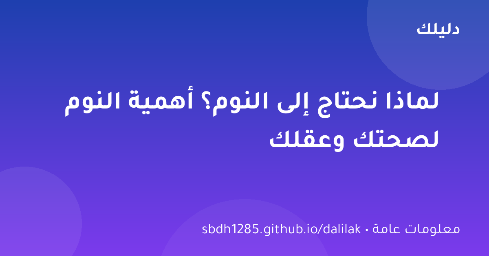
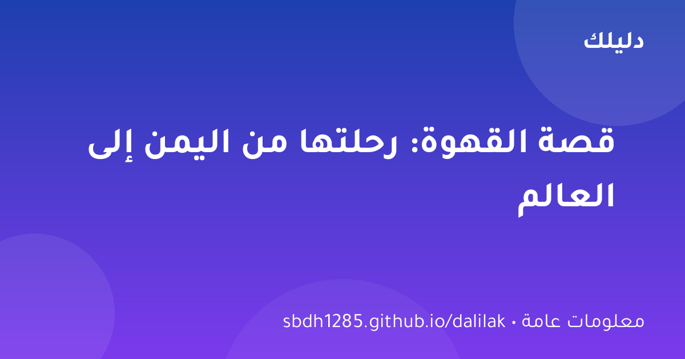

💡 معلومات عامة
لماذا نحتاج إلى النوم؟ أهمية النوم لصحتك وعقلك
النوم ليس رفاهية بل ضرورة بيولوجية: كيف يعمل الدماغ أثناء النوم، ماذا يحدث عند نقصه، ونصائح عملية لنوم أفضل.

نعيش داخل أجسادنا طوال حياتنا، ومع ذلك فهي تحمل أسرارًا تدهشنا كلما اكتشفناها. من القلب الذي لا يتوقف أبدًا إلى العظام التي تتحمل أوزانًا خيالية، إليك مجموعة من أكثر الحقائق إثارة عن جسم الإنسان.
ينبض قلبك حوالي 100 ألف مرة في اليوم، و100 مليون مرة في السنة تقريبًا، دون توقف واحد منذ ولادتك. خلال يوم واحد يضخ قلبك حوالي 7,500 لتر من الدم، أي ما يعادل ملء خزان سيارة صغيرة كل يوم. وفي حياتك كلها، يضخ قلبك ما يكفي لملء عدة حمامات سباحة أولمبية.
قد تبدو العظام هشة، لكن الحقيقة أنها أقوى مما تتصور: السنتيمتر المكعب الواحد من العظم يمكنه تحمل وزن يصل إلى 8 أطنان، أي أن العظم أصلب من الخرسانة وأقرب في قوته إلى الفولاذ. ومع ذلك فهو خفيف، فالهيكل العظمي كله يشكل فقط 15% من وزن الجسم.
الجلد هو أكبر عضو في جسمك، بمساحة حوالي 2 متر مربع عند الشخص البالغ. وهو يتجدد باستمرار: تتخلص من حوالي 30,000 إلى 40,000 خلية جلدية كل دقيقة، أي أنك تحصل على جلد جديد كليًا تقريبًا كل شهر. معظم الغبار في بيتك هو في الحقيقة خلايا جلد ميتة!
يحتوي الدماغ على حوالي 86 مليار خلية عصبية، وكل خلية تتصل بآلاف غيرها، ليشكل شبكة اتصالات يفوق عدد وصلاتها عدد النجوم في مجرتنا. ورغم كل هذا التعقيد، يستهلك الدماغ حوالي 20% من طاقة الجسم رغم أنه يشكل 2% فقط من وزنه. وهو يولد كهرباء تكفي لإضاءة مصباح صغير.
تحتوي معدتك على حمض الهيدروكلوريك القوي جدًا لدرجة أنه يستطيع إذابة المعدن. تحمي نفسها منه بطبقة مخاطية تتجدد باستمرار. ولحسن الحظ، تستبدل معدتك طبقتها المخاطية كل بضعة أيام، وإلا لكانت هضمت نفسها بنفسها.
جسم الإنسان آلة مذهلة تجمع بين القوة والدقة والتعقيد بطرق لا تزال العلوم تكتشف أسرارها. في المرة القادمة التي تنظر فيها إلى يدك أو تسمع نبض قلبك، تذكر أنك تحمل في داخلك واحدة من أعاجيب الكون — وهو يستحق منك الاهتمام والعناية.
هذه الحقائق تذكّر بقيمة الجسد: شرب الماء الكافي، النوم المنتظم، والحركة اليومية تحافظ على عمل الأنظمة المعقدة التي ذكرناها. الفحوص الدورية والوقاية أوفر من العلاج. ابدأ بخطوة واحدة صغيرة مستدامة بدل تغيير مفاجئ لا يدوم.

النوم ليس رفاهية بل ضرورة بيولوجية: كيف يعمل الدماغ أثناء النوم، ماذا يحدث عند نقصه، ونصائح عملية لنوم أفضل.

اليمن هي الموطن الأصلي لشجرة البن العربي، ومن ميناء المخا انطلقت القهوة لتغزو العالم — رحلة تاريخية ممتعة.

الأرض عمرها 4.54 مليار سنة تقريبًا — لكن كيف عرف العلماء ذلك؟ رحلة ممتعة عبر الزمن الجيولوجي وتاريخ كوكبنا.